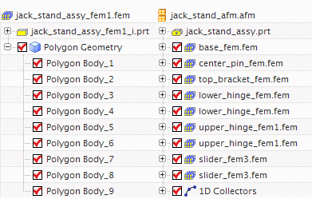

当您从 NX 装配创建单个有限元模型文件时，使用装配有限元模型具有以下优势：
使用装配有限元模型来改进组件网格的记录和管理。
使用和重用现有的组件有限元模型
您可以控制组件有限元模型的加载，以更有效地使用资源。
您可以使用备选网格或几何体表示来替换单个组件有限元模型。
您可以在小组成员之间分配工作。
|

|
当您从 NX 装配创建单个有限元模型文件，以生成包含多个多边形体的有限元模型。在使用较小较简单的装配时，此方法可能更合适。当对于较大或者复杂的装配时则显得不明智。装配有限元模型允许您跟踪按组件进行命名的网格，改进记录和管理。
通过将单个组件有限元模型映射到装配有限元模型，您可以在多个装配有限元模型中使用和重用现有的组件有限元模型，包括旧的和导入的有限元模型数据，您可以在多个装配有限元模型中使用相同的有限元模型(比如标准件)。
可以使用备选网格或几何体表示来替换单个组件 FEM，以便在保留原来的组件有限元模型数据并保存操作和资源的同时支持假设分析。
最后，装配有限元模型支持小组协作。小组成员或第三方可提供单个部件或子装配的网格，分析员或项目管理者可将其装配到完整的系统模型中。对组件有限元模型或其关联的 CAD 数据所做的更新可由软件自动处理，或由用户根据部件进行处理。